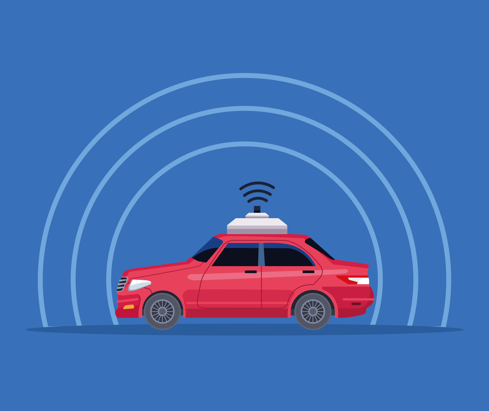

A vehicles (AVs), also known as self-driving cars, are one of the most transformative technologies on the horizon. These vehicles use a combination of sensors, artificial intelligence (AI), machine learning, and sophisticated algorithms to navigate and operate without human intervention. Here’s a closer look at autonomous vehicles and their potential impact:
Autonomous vehicles rely on a range of technologies to operate safely and efficiently:
Sensors and Cameras: AVs use LIDAR (Light Detection and Ranging), radar, and cameras to detect objects, map the environment, and identify obstacles. These sensors provide a 360-degree view of the vehicle’s surroundings.
AI and Machine Learning: AI algorithms analyze data from sensors in real time to make decisions about speed, direction, and obstacle avoidance. Machine learning allows the vehicle to improve its driving abilities over time.
GPS and Mapping: High-precision GPS systems combined with detailed maps help the vehicle navigate its environment, plan routes, and predict traffic patterns.
Connectivity: Vehicles communicate with each other and infrastructure (V2V and V2I) to share information about road conditions, traffic, and hazards.
Autonomous vehicles are classified into levels based on how much human intervention is required:
Level 0: No automation (driver is fully in control).
Level 1: Driver assistance, such as adaptive cruise control.
Level 2: Partial automation, where the vehicle can handle some tasks, like steering and acceleration, but the driver must remain engaged.
Level 3: Conditional automation, where the vehicle can handle most tasks, but the driver must be ready to take control if necessary.
Level 4: High automation, where the vehicle can drive autonomously in specific environments (e.g., within a geo-fenced area like a city).
Level 5: Full automation, where the vehicle can operate autonomously under any conditions, with no need for a driver.
Safety Improvements: AVs have the potential to dramatically reduce traffic accidents, as human error accounts for 90% of accidents. With AI-driven systems, autonomous vehicles can react faster than humans, avoid collisions, and follow traffic